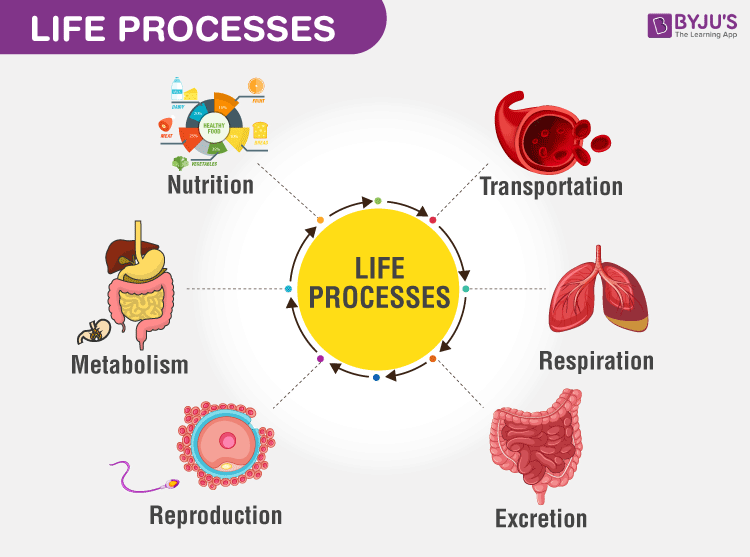

Tissues

There are four types of tissues:
epithelial, muscle, connective and nervous.
Epithelial: Epithelial tissue lines the outside of organs, like the liver and kidney. It also lines the inside of your mouth and throat.
Muscle: This tissue is involved with moving your body. Here are the three different types of muscle tissue:
Smooth muscle: this muscle can be found
in some of your organs. Smooth muscle moves on its own. Your intestines have smooth muscle that moves food through to your stomach.
Cardiac Muscle: The muscle that moves your heart. While some other muscles in the body get tired, this one will never get worn out.
Nervous: Nervous tissue controls the nervous system (your brain and spinal cord). The cells that make up nervous tissue are called neurons. Neurons make connections between the brain and body. It lets you see, smell, touch, taste and think!
Connective Tissue:
Your body needs all of your tissues working together to keep you alive. Connective tissue protects all the other tissues and the body as a whole. Your bones, and fat are all made up of connective tissue. For example, your skeleton is made of connective tissue (bones) and it protects the internal organs from damage.
Life Processes

There are 7 life processes, which every living thing have in common with each other! These are: movement, reproduction, sensitivity, nutrition, excretion, respiration and growth. Movement - all animals and plants can move, the roots of a plant move down in the soil while the stems move up torwards the light! Meanwhile animals move very quickly and are not rooted like plants. Respiration - breathing. All creatures need to breath because they cannot survive without oxygen. Sensitivity - all living things are sensitive to things, this makes it so they are aware of their surroundings and environment. Animals can respond to taste, touch, smell, heat, light and more! Plants appear less sensitive because their response is a lot slower than animals. But some plants, like the venus fly trap, respond very quickly to touch. Growth - every animal and plant grows, plants keep growing their entire life while animals stop once they reach adulthood. Excretion - All living things make waste and so it needs to be got rid of. Reproduction - every living thing needs to reproduce or their species would die out. Plants produce seeds and animals lay eggs or have babies. Nutrition - Animals and Plants need food for energy and growth. Plants make their own food by photosynthesis while animals have to find their own food